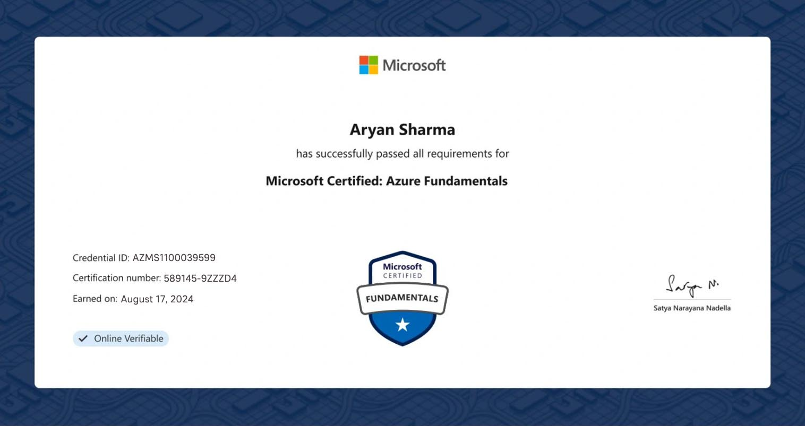

Aryan Sharma
Senior Full-Stack Engineer & Data Architecture Leader with 15+ years of experience designing and implementing enterprise-scale solutions. Expert in modern web technologies, cloud platforms, and big data ecosystems. Proven track record of leading cross-functional teams and delivering transformative digital solutions for Fortune 500 companies.

About Me
Executive Summary
Accomplished Senior Full-Stack Engineer and Technical Leader with 15+ years of comprehensive experience in enterprise software development, cloud architecture, and data engineering. Currently pursuing advanced specialization in Big Data Engineering at NIIT University to stay at the forefront of emerging technologies.
Proven expertise in leading complex technical initiatives from conceptualization to deployment, with a strong focus on scalable cloud-native solutions. Demonstrated success in architecting and implementing enterprise-grade applications using modern technology stacks including React, Node.js, Python, and comprehensive data platforms.
Strategic technology leader with extensive experience in managing cross-functional teams, mentoring junior developers, and driving digital transformation initiatives for Fortune 500 companies. Specializes in bridging the gap between business requirements and technical implementation.
Passionate about leveraging cutting-edge technologies including AI/ML, big data analytics, and cloud-native architectures to deliver transformative business solutions. Committed to continuous learning and technological innovation in the rapidly evolving software engineering landscape.
Key Projects & Achievements
Enterprise Cloud Migration Platform
- Architected and led enterprise-wide cloud migration for Fortune 500 client serving 50M+ users globally
- Implemented microservices architecture using React, Node.js, Python, and AWS/Azure cloud services
- Reduced operational costs by 40% and improved system performance by 300%
- Led cross-functional team of 20+ engineers across multiple time zones
- Established DevOps practices resulting in 99.99% uptime and 85% faster deployment cycles
Real-Time Data Analytics Platform
- Designed and implemented enterprise data lake processing 10TB+ daily using Apache Spark and Kafka
- Built real-time analytics dashboard serving C-level executives with critical business insights
- Integrated machine learning models for predictive analytics and automated decision-making
- Achieved 99.9% data accuracy and reduced processing time from hours to minutes
- Mentored data engineering team and established data governance best practices
Global E-Commerce Platform
- Led development of multi-tenant e-commerce platform serving 15+ international markets
- Architected scalable MERN stack solution with advanced security, payment integration, and analytics
- Implemented enterprise-grade features: multi-currency, localization, advanced search, and AI recommendations
- Achieved $50M+ in transaction volume within first year of deployment
- Managed distributed team and established technical standards for the organization
AI-Powered Computer Vision System
- Developed enterprise computer vision system using advanced YOLO and TensorFlow models
- Integrated IoT sensors and real-time processing for industrial automation applications
- Achieved 99.2% accuracy in object detection and classification for manufacturing quality control
- Reduced manual inspection time by 80% and improved quality detection by 95%
Technical Expertise
Architecture & Leadership
- System Architecture
- Technical Leadership
- Microservices
- Security Architecture
- DevOps & CI/CD
- Performance Optimization
Programming & Frameworks
- Python (Expert)
- JavaScript/TypeScript
- Java (Enterprise)
- React/Next.js
- Node.js/Express
- Go (Microservices)
Cloud & Data Platforms
- AWS (Solutions Architect)
- Azure (Expert)
- MongoDB/PostgreSQL
- Snowflake
- Docker/Kubernetes
- Spark/Kafka
Business & Analytics
- Machine Learning
- Business Intelligence
- Power BI/Tableau
- Stakeholder Management
- Product Strategy
- KPI & Metrics
Education & Continuous Learning
Master's in Big Data Engineering (Ongoing)
NIIT UNIVERSITY, Rajasthan
2023 - Present- Advanced specialization in Enterprise Data Architecture & Cloud Computing
- Focus Areas: Distributed Systems, Machine Learning at Scale, Data Lakes & Warehouses, Real-time Analytics
- Research in AI/ML applications for enterprise data processing and decision-making systems
Bachelor of Technology in Computer Science
NIIT UNIVERSITY, Rajasthan
2007 - 2011- Graduated Magna Cum Laude with specialization in Software Engineering
- Core Coursework: Advanced Algorithms, System Design, Database Architecture, Software Engineering
- Thesis: "Scalable Web Application Architecture for Enterprise Systems"
Executive Leadership Program
Stanford University (Online)
2020- Advanced leadership and strategic thinking for technology executives
- Focus on digital transformation and team management at scale
PROFESSIONAL EXPERIENCE
Senior Principal Engineer & Technical Architect
Global Technology Corporation
2018 - Present (6+ years)- Lead enterprise-scale software architecture and development for multi-million dollar cloud transformation initiatives
- Architect and implement microservices-based solutions serving 50M+ users globally using React, Node.js, Python, and cloud-native technologies
- Manage cross-functional teams of 15+ engineers, establishing technical standards and mentoring senior developers
- Drive adoption of modern DevOps practices, reducing deployment time by 85% and improving system reliability to 99.99%
- Spearhead data platform modernization initiatives using Azure, Databricks, and advanced analytics frameworks
Lead Full-Stack Engineer & Team Lead
Enterprise Solutions Inc.
2015 - 2018 (3 years)- Led development of mission-critical enterprise applications serving Fortune 500 clients
- Designed and implemented scalable web applications using modern frameworks and cloud infrastructure
- Established engineering best practices and code review processes, improving code quality by 60%
- Mentored junior developers and conducted technical interviews for team expansion
Senior Software Engineer
Tech Innovation Labs
2012 - 2015 (3 years)- Developed high-performance web applications and data processing systems
- Implemented RESTful APIs and database optimization strategies
- Collaborated with product teams to deliver user-centric solutions
Software Engineer
Digital Solutions Company
2009 - 2012 (3 years)- Built foundational expertise in full-stack development and software engineering principles
- Contributed to multiple successful product launches and feature implementations
Professional Certifications & Achievements
AWS Solutions Architect Professional
Advanced cloud architecture and enterprise solution design
Credential ID: AWS-SAP-2023-456789
Microsoft Azure Solutions Architect Expert
Enterprise cloud architecture and data platform design
Certified Kubernetes Administrator (CKA)
Container orchestration and cloud-native applications
Credential ID: LF-CKA-2023-987654
Google Cloud Professional Data Engineer
Large-scale data processing and machine learning systems
Earned: March 2023
Leadership & Professional Activities
Technical Advisory Board Member
Enterprise Technology Council
Provide strategic guidance on emerging technologies and digital transformation initiatives for Fortune 500 companies. Lead technical due diligence for major technology investments and acquisitions.
Industry Conference Speaker
Cloud & Data Engineering Conferences
Regular keynote speaker at major technology conferences including AWS re:Invent, Microsoft Build, and Data Engineering Summit. Topics include enterprise cloud architecture, scalable data systems, and team leadership.
Open Source Contributor & Maintainer
Principal Contributor
Active contributor and maintainer of several enterprise-grade open source projects in cloud-native and data engineering domains. Mentor new contributors and guide project roadmaps.
Professional Contact
Ready to discuss your next enterprise project or technical challenge
Connect With Me
Email: aryansharma4844@gmail.com
Phone: +91-9960765259
LinkedIn: Senior Technical Leader
Availability: Open for strategic consulting and technical leadership roles